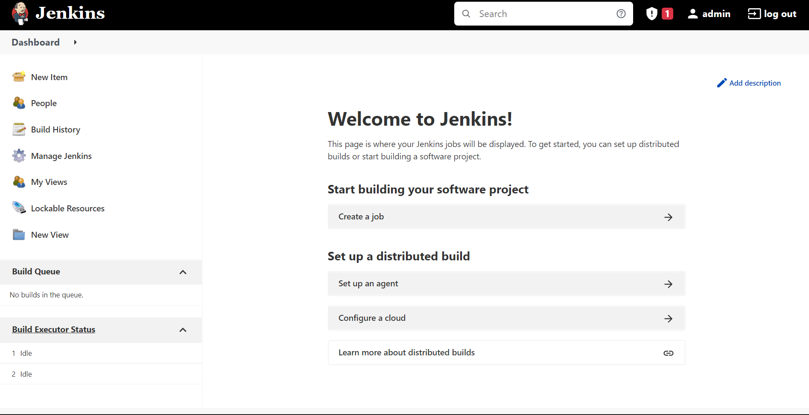
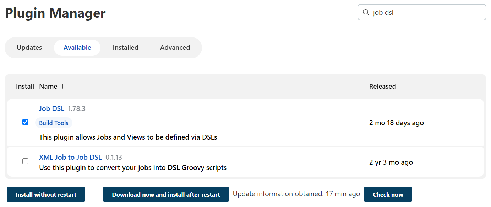
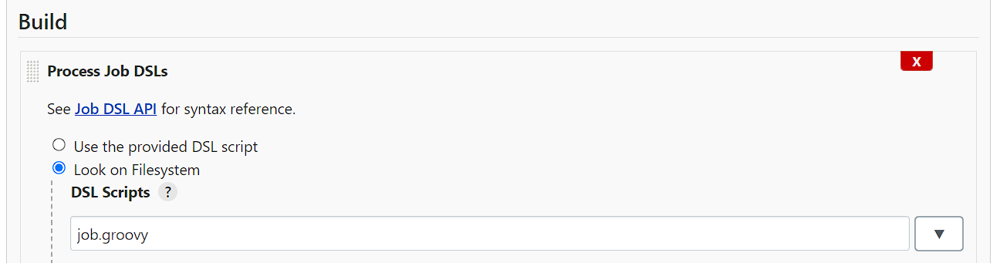
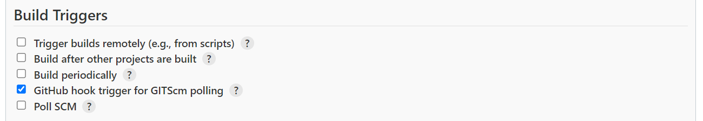
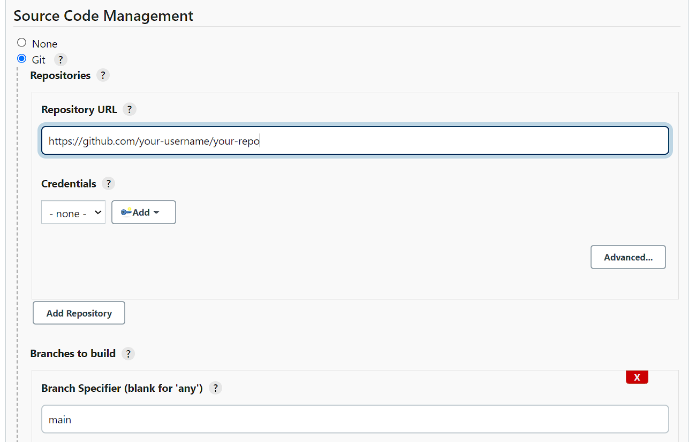
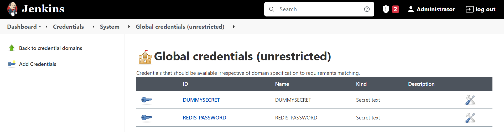
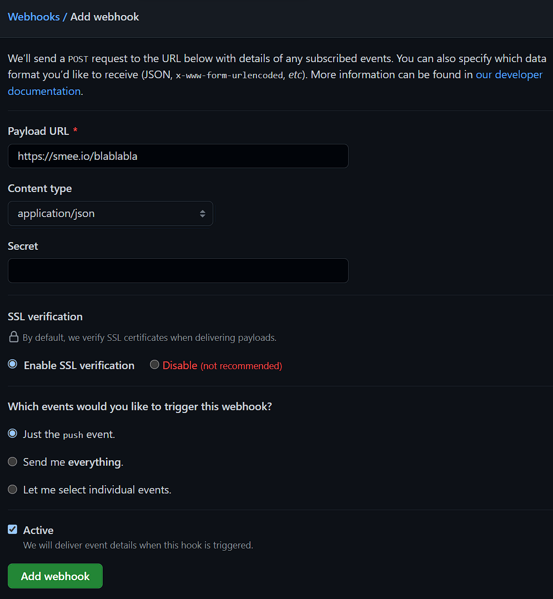

Tech Stack
Topik yang akan dibahas meliputi:
Overview

Di posting kali ini kita akan men-setup Jenkins dan Redis di dua kontainer terpisah menggunakan Docker, membuat Job Jenkins dengan jenis Freestyle Project yang berisi task sederhana untuk get dan set key Redis, memginstal plugin DSL dan membuat Seed Job sehingga semua Job lainnya dapat dibuat otomatis dengan hanya satu aksi tanpa harus klik sana klik sini (alias configuration as code), serta mengunggah script DSL ke GitHub yang nantinya dihubungkan melalui webhook Smee agar dengan hanya mem-push ke GitHub, semua perubahan secara otomatis ter-apply ke Jenkins (alias continuous integration).
FAQ
Kenapa Kontainer?
Jenkins dan Redis diinstal di kontainer agar tidak bergantung pada komputer host (laptop kamu). Apapun yang terjadi pada komputer host dan kontainer, akan mudah di-restore. Jika di kemudian hari Jenkins dan Redis tidak dibutuhkan lagi, cukup hapus kontainer dan image-nya saja (serta volume). Tidak bakal ada file sampah tersisa di komputer host.
Apa itu DSL?
DSL adalah plugin Jenkins yang memungkinkan kita menerapkan praktik configuration as code. Ini adalah solusi bagus karena semua Job akan tersimpan dengan baik di repositori (misalnya di GitHub) karena tidak perlu lagi mengklik ini itu di dashboard Jenkins untuk membuat Job dan semua perubahan konfigurasi akan tercatat di GitHub. Konfigurasi tersimpan di hanya satu tempat. Single source of truth. Selain itu, jika nantinya ada masalah pada Jenkins, semua konfigurasi dapat di-restore dengan cepat.
Prasyarat
- Docker sudah diinstal
- Repositori GitHub sudah disiapkan
Instalasi dan Konfigurasi
Cp. 1: Setup Kontainer
Simpan file docker-compose.yml dan Dockerfile berikut ini di dalam satu direktori yang sama.
1
2
3
4
5
6
7
8
9
10
11
12
13
14
15
16
17
18
19
20
21
22
23
24
25
26
27
28
29
# docker-compose.yml
version: '3.8'
services:
jenkins:
build:
context: .
dockerfile: Dockerfile
container_name: jenkins
privileged: true
user: root
ports:
- 8081:8080
- 50001:50000
volumes:
- ~/docker-volume/jenkins:/var/jenkins_home
- /var/run/docker.sock:/var/run/docker.sock
networks:
- network
redis:
image: redis
container_name: redis
ports:
- 6379:6379
networks:
- network
command: redis-server --save 20 1 --requirepass 12345678 --loglevel warning
networks:
network:
driver: bridge
1
2
3
4
5
6
7
8
9
10
11
12
13
14
15
16
# Dockerfile
FROM jenkins/jenkins:lts
USER root
# install npm and Smee (webhook payload delivery service)
RUN curl -fsSL https://deb.nodesource.com/setup_17.x | bash -
RUN apt update
RUN apt install -y nodejs
RUN npm install --global smee-client
# install screen to enable Smee run in background
RUN apt install -y screen
# install redis-cli command
RUN apt install -y redis-tools
Jalankan perintah berikut di dalam direktori di mana kedua file tersebut berada:
1
$ docker-compose up -d
Validasi bahwa container telah berjalan dengan benar:
1
2
3
4
5
6
7
$ docker ps
# output:
CONTAINER ID IMAGE COMMAND CREATED STATUS PORTS NAMES
b4bc27a05497 jenkins_jenkins "/sbin/tini -- /usr/…" 11 hours ago Up 45 minutes 0.0.0.0:8081->8080/tcp, 0.0.0.0:50001->50000/tcp jenkins
6dc414e4d7aa redis "docker-entrypoint.s…" 11 hours ago Up 45 minutes 0.0.0.0:6379->6379/tcp redis
Cp. 2: Setup Jenkins
Install Jenkins
Akses localhost:8081 di browser. Halaman instalasi Jenkins akan muncul dan akan meminta temporary admin password. Jalankan perintah berikut untuk mengetahuinya:
1
2
3
4
5
6
7
$ docker logs -f jenkins
# output
Jenkins initial setup is required. An admin user has been created and a password generated.
Please use the following password to proceed to installation:
1906342b77f244c79ea6a24f28959b8e
Di halaman Customize Jenkins, pilih Install Suggested Plugins. Tunggu hingga semua plugin terinstal. Perhatikan bahwa menu Select Plugin to Install tidak akan menampilkan semua plugin yang tersedia di internet, termasuk DSL. Plugin DSL hanya bisa dperoleh di menu Plugin Manager ketika Jenkins telah selesai diinstal.
Dashboard Jenkins
Install Plugin DSL
Jika proses instalasi Jenkins telah selesai, pada menu sidebar di halaman awal dashboard (gambar di atas), klik Manage Jenkins > Manage Plugins > Available > cari job dsl. Centang dan klik Install Without Restart.

Terakhir, klik menu Manage Jenkins yang ada pada sidebar di halaman awal dashboard. Klik Configure Global Security, uncheck Enable script security for Job DSL scripts. Klik Save. Langkah ini diperlukan agar fitur keamanan Jenkins membolehkan Jenkins untuk mengeksekusi file DSL script (lihat langkah selanjutnya).
Buat Seed Job
Seed Job adalah istilah yang mengacu pada Job khusus DSL yang fungsinya sebagai generator Job lain. Seed Job ini berjalan berdasarkan file DSL script yang nantinya kita sediakan.
Di sidebar halaman awal dashboard, klik New Item, ketik nama Seed Job, misalnya Seed-Job-DSL. Pilih Freestyle Project lalu klik OK. Tunggu hingga Seed Job selesai dibuat dan Jenkins akan mengarahkan kita ke halaman Configure.
Di bagian Build, klik menu dropdown Add Build Step lalu pilih Process Job DSLs. Masih di bagian Build, pilih Look on Filesystem dan ketik job.groovy di kolom isian DSL Script.
Build Section
Untuk integrasi ke repositori, masih di halaman Configure yang sama, centang GitHub hook trigger for GITScm polling di bagian Build Triggers. Kemudian, pilih Git di bagian Source Code Management. Di sini, cukup 2 kolom isian saja yang harus disesuaikan: Repository URL dan Branch Specifier. Repository URL diisi dengan nama repositori file job.groovy disimpan. Sedangkan Branch Specifier isi saja main.
Build Triggers Section
Source Code Management Section
Selesai. Jangan lupa klik Save.
Tambah Credential
Langkah ini diperlukan untuk me-masking password Redis yang telah kita definisikan di file docker-compose.yml pada baris ke 26. Password ini digunakan oleh Jenkins tiap kali mengakses Redis, baik untuk memperoleh atau mengeset suatu key. Alih-alih meng-hardcode password yang tentunya tidak aman, tambahkan password ini ke fitur Credentials Jenkins.
Caranya, klik username admin yang ada di header kanan atas (sebelah kiri tombol logout), lalu klik Credentials, klik Jenkins yang ada di bagian Stores from Parent, klik Global Credentials, lalu klik Add Credentials. Pada menu dropdown Kind, pilih Secret Text, lalu isi kolom isian Secret dengan password Redis, dalam hal ini 12345678. Isi juga ID dengan nama kredensialnya, yaitu REDIS_PASSWORD. Klik OK.

Cp. 3: Unggah DSL Script ke Repo
Buat file baru dengan nama job.groovy.
1
2
3
4
5
6
7
8
9
10
11
12
13
14
15
16
17
18
19
20
21
22
23
24
25
26
27
28
29
// job.groovy
job('JOB-02-FREESTYLE-PROJECT-02-REDIS'){
description('Get or set Redis key.')
parameters{
choiceParam('Action', ['Getall', 'Get', 'Set'])
stringParam('Key')
stringParam('Value')
}
wrappers {
credentialsBinding {
string('REDIS_PASSWORD', 'REDIS_PASSWORD')
}
}
steps {
shell('''#!/bin/bash
if [[ "$Action" == "Getall" ]]; then
redis-cli -h redis -p 6379 -a $REDIS_PASSWORD keys '*'
elif [[ "$Action" == "Get" ]]; then
redis-cli -h redis -p 6379 -a $REDIS_PASSWORD get $Key
elif [[ "$Action" == "Set" ]]; then
redis-cli -h redis -p 6379 -a $REDIS_PASSWORD set $Key $Value
fi
''')
}
}
Simpan file tersebut ke repositori.
1
2
3
$ git add job.groovy
$ git commit -m "create job.groovy"
$ git push origin main
Cp. 4: Setup Webhook
Buat Channel Baru di Smee
Kunjungi smee.io di browser. Klik Start a New Channel. Simpan baik-baik URL-nya. Kalau perlu di-bookmark.
Jalankan Smee Client
Beralih ke kontainer Jenkins. Masuk ke kontainer dengan cara:
1
$ docker exec -it jenkins bash
Jalankan perintah berikut untuk membuat session Screen baru, agar Smee client dapat berjalan secara background.
1
$ screen -S smee
Jalankan Smee client.
1
$ smee --url https://smee.io/blablabla --path /github-webhook/ --port 8080
Deatach Screen dengan cara menekan tombol ctrl + A + D. Lalu keluar dari kontainer dengan menekan tombol ctrl + D.
Tambah Webhook di GitHub
Di repositori GitHub tempat di mana file job.groovy disimpan, klik menu Settings, Webhooks, Add Webhook.
Isi Payload URL dengan URL Smee. Lalu pilih application/json di menu dropdown Content Type. Klik Add Webbhook.

Cp. 5: Enjoy!
Yup, selesai.
Tiap kali kamu melakukan perubahan di repositori melalui perintah git push di komputermu, Jenkins akan secara otomatis menjalankan DSL script dan meng-apply perubahan tersebut. Katakanlah kamu membuat Job baru yang berisi task untuk menambah data ke database MySQL. Dengan hanya git push, Job tersebut langsung muncul di Jenkins dan siap pakai.